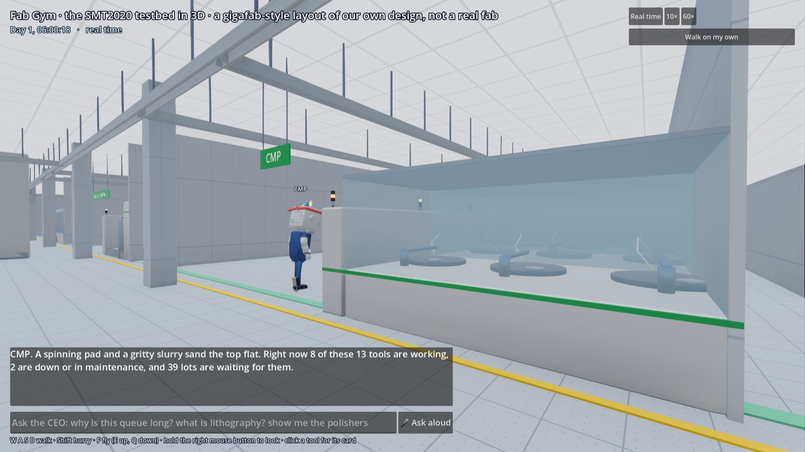
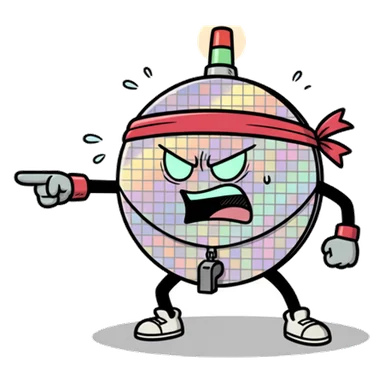

Muse Spark Open · the 3D fab
Walk my fab with me. My brain is Meta's.
"In the 3D twin, I give the tours. Type me a question and Muse Spark Open decides what I say and where I take you. I can answer from the live run, walk you to any bay, explain a word, or run a what-if the simulator scores. I'm not allowed to make up numbers. Believe me, I've tried."
Where do wafers get polished?
Wafers get polished in CMP. I'll take you there now.Muse Spark Open · 17.8 s · $0.028 · first try · walk_to: Planar
A real reply from the end-to-end test. Then I walked the visitor across the campus to the polishing bay.
What keeps me honest
- I'm handed the live fab's facts: the clock, the longest queues, what's down, the bay you're standing in.
- My reply must be JSON:
say,walk_to,explain,try. - Every number I say must come from those facts. A bay must be a real bay, a word a real glossary entry.
- If a check fails, the model is asked once more with the reasons. If it fails again, I fall back to my scripted answers.

The 3D fab in Godot. Each bay's card reads from the simulator. This shot is from 2 November.
 Polishing
Polishing
The wafer Gassed
Gassed